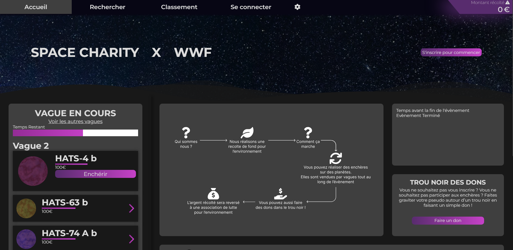
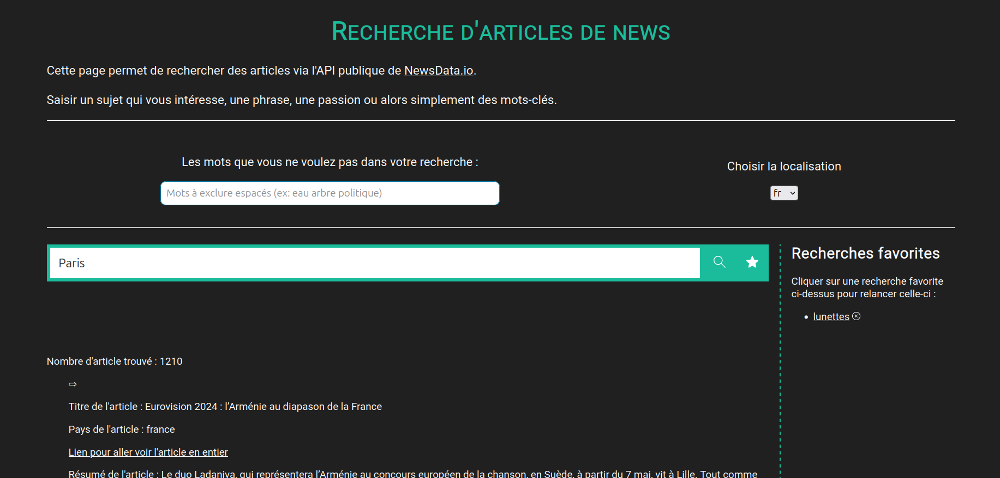
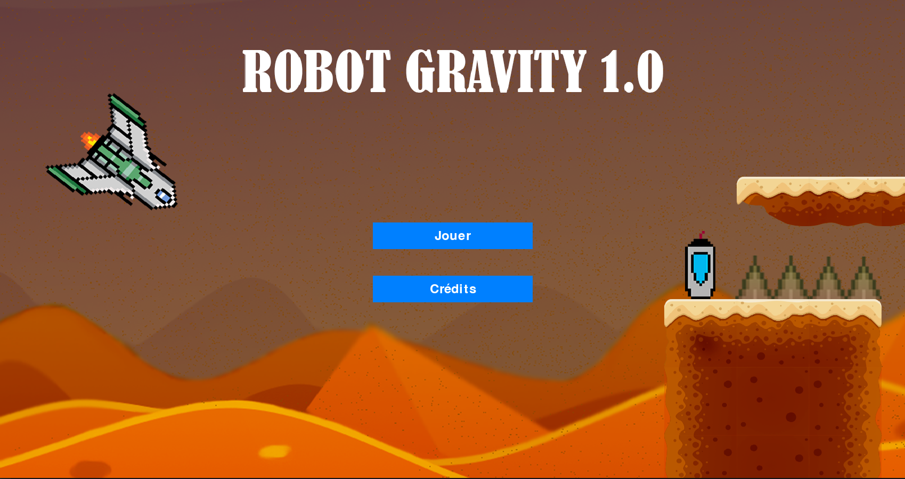
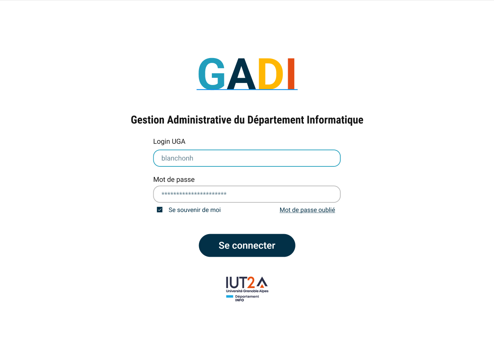

Mes Projets Académiques

Space Charity
- Language : PHP, NodeJS et JavaScript
Space Charity est un projet d'enchère de planètes (de manière virtuelle).
Le but de ce projet était de faire un site web sous PHP tout en incluant des éléments de vente aux enchères en B To C uniquement.
Notre concept est le suivant :
- Une vente aux enchères disponible plusieurs fois par an, le temps de quelques jours.
- Pendant l’évènement, les astres sont regroupés par lots, appelés vagues. Chaque vague à une durée déterminée, souvent de quelques heures, durant lesquelles les utilisateurs peuvent enchérir sur les différents astres.
- Entre deux évènements, le propriétaire d’une planète reste le même, et peut donner un surnom à sa planète.
- Les recettes des enchères seraient reversées à des associations comme WWF.

Projet API de recherches d'articles de News
- Language : HTML/CSS et JavaScript
- API utilisée NewsData.io
Le but de ce projet était de faire un mini site web utilisant une API parmi une sélection d'API disponibles sur divers thèmes comme les jeux ou la culture. Nous étions deux à travailler sur ce projet et nous avons décidé de le faire avec l'API NewsData.io Sur ce site, il est possible de faire des recherches d'articles de nouvelles récentes ou non à partir de mots-clés. Il y a quelques fonctionnalités en plus, comme la possibilité de retirer des mots-clés de la recherche où choisir la langue des articles. Il est également possible de mettre des recherches en favoris en gardant les filtres de cette recherche.
Ce projet nous a permis de développer nos compétences en développement web, en intégration d'API et en travail d'équipe.

Robot Gravity
- Language : Python
La Game Jam est un évènement avec pour thème principal les jeux vidéos où les participants, groupés en équipes, doivent créer un jeu dans un temps très limité, généralement quelques jours. J'ai eu l'occasion de faire 4 jours de Game Jam avec 3 camarades sur les deux thèmes : Robot et Gravité. Nous devions donc faire un jeu en utilisant le langage Python et sa librairie Pygame permettant de faire des jeux 2D basiques mais rapides à faire. Nous devions faire attention à la qualité du code en plus de fournir un jeu le plus original possible.

GADI
- Language Frontend : Angular
- Language BackEnd : Symfony
- Base de données sous PostgreSQL
Le but de ce projet était de refaire entièrement un site utilisé par les professeurs du BUT informatique, nommé GADI. En effet, ce dernier, créé il y a plus de 10 ans, était devenu obsolète et mal conçu pour gérer certains cas, notamment avec l'arrivée de la réforme des BUT. GADI permet de nombreuses fonctionnalités, telles que la gestion des budgets des professeurs ainsi que la planification des ressources et des Situations d'Apprentissage et d'Évaluation (SAE).